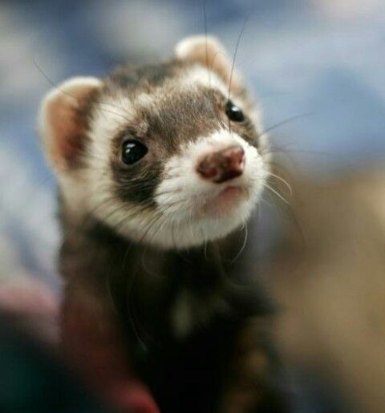
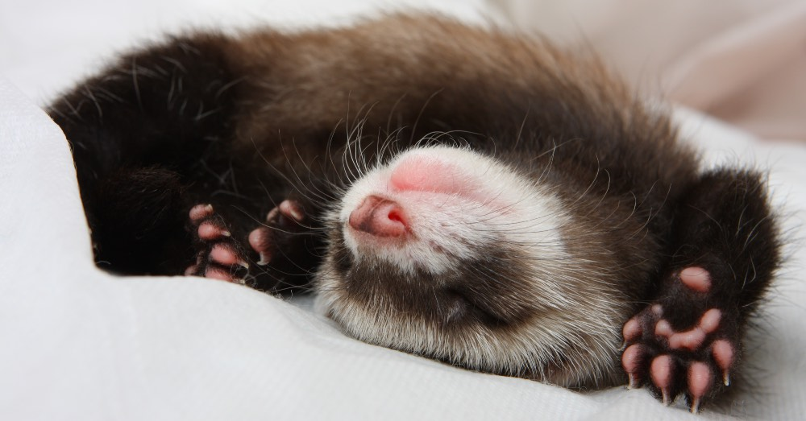

El hurón es un simpático animal que fue domesticado hace aproximadamente 2.500 años y que cada vez con más frecuencia adoptamos como mascota. Existe una gran variedad de hurones a los que podemos diferenciar por el tamaño del pelo, por su color o su complexión. Sin embargo, curiosamente, no hay razas de hurones establecidas como tal.
Los hurones son juguetones, inquisitivos y tienen conductas exploratorias muy marcadas. Son relativamente fáciles de mantener y son muy buenas mascotas, ya que forman fuertes vínculos con sus cuidadores. Rara vez son agresivos, y las veces que son mordedores es por falta de socialización.
Páginas relacionadas
